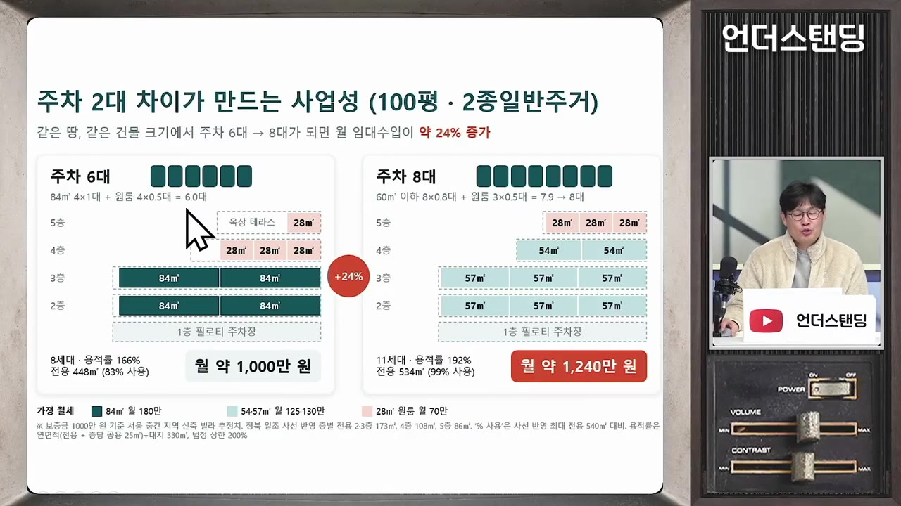
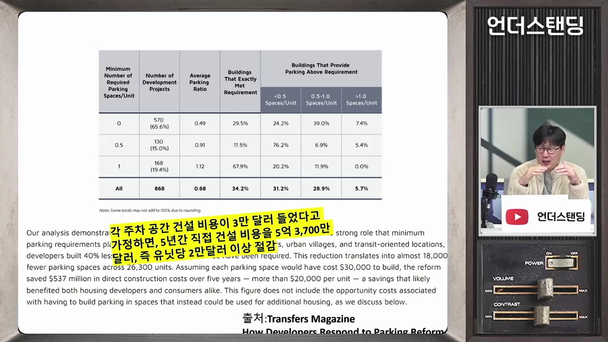

"주차 지옥이냐, 월세 지옥이냐. 둘 중 하나는 터집니다" 여전한 1층 주차장 규제 때문에 빌라 못 짓는 현실 (언더스탠딩 장순원 기자)
🎙️ 자막 대신 영상 음성을 받아써서 정리 (ko (음성 받아쓰기·GPU))
▶ 원본 영상 보기한눈에 보기
- 다가구·다세대(빌라)는 용적률이 아니라 1층에 넣을 수 있는 주차 대수가 세대수를 정해서, 주차 규제가 사업성의 핵심이다.
- 시애틀은 2012년부터 주차 최소 설치 기준을 풀어 주차 면수가 약 40% 줄었고, 일본은 차고지 증명제와 주차비 별도 부담으로 무주차 아파트가 늘고 있다.
- 다만 시애틀은 주차 여유가 있던 도시이고 한국은 노후 주택가 주차난이 심해 같은 방식은 어렵다는 반론이 크다.
- 규제를 풀면 신축의 부담이 골목길로 넘어가 기존 주민이 피해를 본다는 우려가 있어, 단속 강화와 역세권 등 지역별 탄력 적용이 대안으로 나왔다.
- 결국 "주차 난리"와 "월세 난리" 중 하나를 고르는 문제이며, 둘 다 해결하기는 어렵다는 것이 결론이다.
이런 분께 도움이 됩니다
- 빌라·도시형 생활주택 공급이 왜 막혀 있는지, 주차 규제와 주택 공급의 관계를 알고 싶은 분.
- 주차 규제 완화 찬반 논리와 해외 사례를 한 번에 정리해 보고 싶은 분.
핵심 내용
왜 주차 대수가 사업성을 정하나
- 다세대·다가구는 보통 50~100평 땅에 짓는다. 지을 수 있는 면적은 용적률이 정하지만 세대수는 사실상 주차 대수가 정한다. (0:58)
- 주차장은 지하로 못 가고 1층에만 넣어야 해서, 많이 지으려면 1층을 주차장으로 채워야 하고 계단실도 못 낸다.
- 정부가 층수 규제(3층→4층)와 사선 규제를 풀었지만, 주차 규제를 풀지 않으면 빌라 공급이 살아나기 어렵다는 주장이다.
- 같은 100평이라도 주차가 6대 나오는 땅과 8대 나오는 땅이 있다. 땅 모양과 도로 접면 길이 때문이다. (3:37)
- 주차 한 대는 회전 반경까지 포함하면 7~9평을 차지한다. 현실적으로 보통 6~7대, 많으면 8~9대다.
- 시뮬레이션(제미나이 활용): 6대면 월세 약 1,000만 원·용적률 83% 사용, 8대면 원룸·투룸을 많이 쪼개 월세 약 1,240만 원. 사업성 차이는 20%대다.
- 6대만 되는 땅도 11세대까지 허용하면 사업성이 생겨 공급이 늘 수 있다는 것이 규제 완화론이다. (5:21)

💡 땅은 같아도 주차 2대 차이가 사업성 20%대 차이로 이어진다.
한국의 현행 주차 기준
- 면적 기준과 세대당 기준을 함께 적용한다. 서울 기준 85㎡ 이하는 면적 합계를 75로 나누는 방식이다. (8:45)
- 예: 25㎡짜리 6세대면 면적 기준은 2대지만, 세대당 0.5대 기준을 적용하면 더 많은 대수가 필요하다. 둘 중 더 큰 값이 적용된다.
- 법·시행령은 많이 풀려 있고, 세부 규제는 지자체 조례·시행규칙에 있다. (21:51)
- 도시형 생활주택은 지자체장이 역세권 등에서 50~70% 완화할 권한이 있지만, 민원 때문에 거의 쓰지 못한다.
해외 사례
| 구분 | 시애틀(미국) | 일본 |
|---|---|---|
| 제도 | 2012년부터 주차 최소 설치 기준 완화 | 1962년부터 차고지 증명제(반경 2km 내 주차 공간 증명) |
| 배경 | 세대당 1대 이상 의무로 빈 주차장이 많았음 | 아파트도 주차비를 따로 냄(최소 약 20만 원~도쿄 최대 약 60만 원) |
| 결과 | 주차 면수 약 40% 감소 | 대중교통 좋은 도심에 무주차 아파트 확산 |
| 단속 | 노상주차 무료라 건물 주차장이 비었음 | 남의 차고지 불법 주차 벌금 약 130만 원, 이면도로 약 13만 원 |
- 시애틀 효과: 산타클라라 대학 연구진이 2012~2017년 인허가 프로젝트를 전수조사했다. 주차 1면 건설비를 3만 달러로 가정하면 세대당 약 2만 달러(약 2,600만 원)가 절감된다. 기회비용과 운영비 절감은 뺀 순수 건축비 기준이다. (7:08)
- 규제는 대중교통이 편한 지역·주상복합에서 시작해 점차 넓혔다.
- 빈 주차장의 건설·운영 적자가 월세에 전가되고 있었다는 것이 완화의 출발점이었다. (6:14)
- 한국은 이면도로 과태료가 4만 원 수준이고 단속도 엄격하지 않다고 소개했다. (18:37)

규제 완화 찬성 논리
- 시장에 맡기면 주차가 필요한 곳은 넣고, 필요 없는 곳은 그 자리에 방을 넣는다. 지금은 시장에 맡긴 게 아니라 "세대수만큼 주차장을 넣으라"는 강제다. (14:57)
- 차 없는 사람이 월세를 깎아 받고 들어오는 방식으로 역세권 등에서 자율 조정이 가능하다.
- 골목길은 공용 공간이므로 기존 주민이 기득권을 주장할 수 없고, 반발은 정치적으로 뚫고 가야 한다고 본다. (16:41)
- 목동 행복주택 반대 사례를 같은 맥락으로 들었다.
- 현재 골목 불법주차 자체가 불법이므로 "내 불법주차가 편하니 집을 덜 지으라"는 논리는 약하다는 주장이다. (20:28)
반론과 현실의 벽
- 시애틀은 주차 공간에 여유가 있었던 도시이고, 한국은 노후 주택가에서 주차 기준이 약하던 시절 건물이 많아 주차난이 극심하다. (12:10)
- 규제를 풀면 신축은 부담을 덜고 피해는 골목을 쓰는 기존 주민이 본다. 수혜는 새 입주자·집주인에게 간다. (13:08)
- 지자체장은 완화 권한이 있어도 민원 때문에 못 쓴다. 한 번 완화하면 되돌리기 어렵고 노상 관리는 정치적 반발이 크다. (22:35)
- 한국은 주택 대책 때마다 규제를 일률적으로 풀었다 슬그머니 되돌리는 식이라, 탄력적 운영이 필요하다는 지적이다.
💡 "주차가 난리 날 거냐, 월세가 난리 날 거냐" — 둘 중 하나를 고르는 문제이고 둘 다 해결하기는 어렵다.
제시된 대안
- 노상주차 관리 강화: 기본적으로 엄격히 해야 한다는 의견. 구청 간 교차 단속(예: 서초구 단속을 강남·동작구가 담당)과 단속 수입을 단속한 쪽이 가져가게 하는 방안. (25:35)
- 자기 구를 직접 단속하면 구청장 지지율·선거 때문에 하기 어렵다는 이유다.
- 한 곳을 단속하면 풍선처럼 불법주차가 옆으로 퍼진다는 한계도 언급됐다.
- 지역별 탄력 적용: 역세권, 오피스 혼재 지역, 초등학교 인근, 월세가 싼 저소득·청년 밀집 지역은 풀고, 지하철 이용이 어려운 외곽은 유지. (29:23)
- 공영·유휴 주차장 활용: 밤에 비는 구청·주민센터·학교 운동장 주차장을 개방. (28:21)
- 규제 완화 차익 환수: 규제를 풀면 땅값이 올라 집주인만 이득이므로 일부를 환수해 공영주차장 확보에 쓰자는 의견. 다만 환수가 사업성을 해친다는 재건축식 딜레마도 지적됐다.
- 주차장업 가업상속 포함: 건물을 헐고 주차장으로 10~20년 운영하면 가업상속 혜택을 주는 아이디어. 대신 오피스 월세가 오를 수 있어 무엇을 희생할지 고르는 문제라고 했다.
기억할 숫자·인용
- 주차 한 대 점유: 7~9평 (주차 면적 자체는 약 3.78평)
- 현실적 주차 대수: 100평 기준 6~9대
- 시뮬레이션: 6대 월세 약 1,000만 원 vs 8대 약 1,240만 원 (사업성 20%대 차이)
- 시애틀: 2012년 완화, 주차 면수 약 40% 감소, 세대당 건축비 약 2,600만 원 절감
- 일본: 주차비 월 약 20~60만 원, 남의 차고지 불법주차 벌금 약 130만 원
- 한국 강남권 일부: 자동차 대비 주차 면적 확보율 약 60%
- "주차가 난리 날 거냐 월세가 난리 날 거냐, 둘 중 하나를 고르는 문제다."
생각해볼 점
- 영상은 규제 완화에 대한 기자·진행자의 대화이며, 사업성 수치는 AI(제미나이) 시뮬레이션이라 실제 사업과 다를 수 있다.
- 주차 규제가 빌라 공급 부진의 가장 큰 원인인지는 건축비·금융·분양 수요 등 다른 요인과 함께 따져 봐야 한다.
- 완화 후 실제 골목 주차난 악화 정도와 월세 하락 폭은 한국 데이터가 없어 확인이 필요하다. 시애틀 결과를 한국에 그대로 적용하기는 어렵다.
바로 해볼 일
- 내가 사는 지역 구청 조례에서 도시형 생활주택·다세대 주차 기준과 완화 규정이 있는지 찾아보기
- 우리 동네가 역세권·주차 여유 지역인지, 야간 공공 주차장이 비는지 확인해 보기